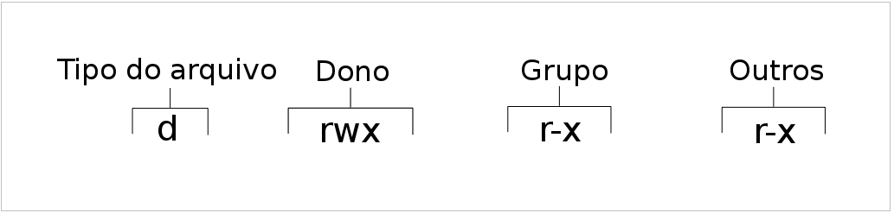
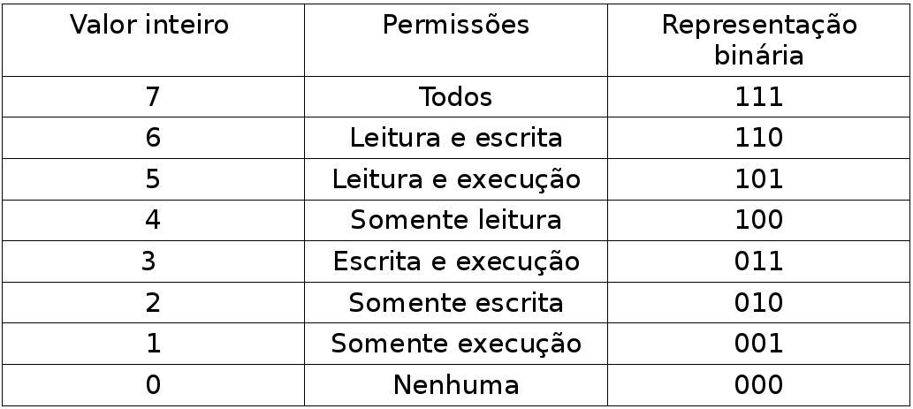

Neste artigo, vamos entendendo as permissões de acesso a arquivos e repositórios e como alterá-las. Para um Administrador de Sistema é primordial entender as permissões de acesso a arquivos e repositórios e como alterá-las. Isso não se restringe apenas aos Administradores de Sistemas, também é necessário para usuários domésticos, pois algumas vezes temos que alterar a permissão de um arquivo.
Para ver as permissões que um arquivo ou diretório possui, temos que executar o seguinte comando:
ls -l
O comando ls lista o conteúdo do diretório, no meu caso é o diretório home e a opção -l trás as informações em um formato longo mostrando as permissões, número e links, proprietário, grupo, tamanho, data de modificação e nome do arquivo.

Vamos entender o que cada coluna se trata, primeiro vamos começar pela coluna das permissões, para entender o que cada letra significa.
Conhecendo as Permissões
A primeira letra trata da natureza do arquivo, se ele é um diretório, link, arquivo comum de usuário, arquivo de bloco, Socket de comunicação entre processos, Pipe de comunicação entre processos ou arquivo de caractere.
d = Diretório
- = Arquivo comum de usuário
b = Arquivo de bloco
c = Arquivo de caractere
l = Link
s = Socket de comunicação entre processos
p = Pipe de comunicação entre processos
Depois temos as letras rwx (que sempre apareceram nessa ordem) que estão divididas em três categorias, dono, grupo e outros. Onde cada letra determina o acesso a um diretório ou arquivo, ao dono, grupo e outros. As letras rwx significam:
r = Permissão de Leitura (read)
w = Permissão de Escrita (write)
x = Permissão de Execução (execution)
- = Sem Permissão

As outras colunas são mais fácies de entende, porque elas são autoexplicativas. A coluna do link, mostra a quantidade de link que esse arquivo ou diretório possui. Na Coluna do Proprietário, a pessoa que criou o arquivou ou diretório (dono), nesse caso é allythy. A Coluna do Grupo, o grupo ao qual pertence o arquivo ou diretório, nesse caso o grupo é allythy. A coluna Date e Hora, mostra a última vez que o arquivo foi alterado. E por fim, a última coluna que diz o nome do arquivo.
Vamos aprender a alterar essas permissões
Para alterar essas permissões em arquivos ou diretório, vamos utilizar o comando chmod em modo octal, pois é mais fácil para o entendimento.
A sintaxe do comando é essa :
chmod [opções] [permissões] [nome do arquivo ou diretório]

Os valores que são necessário para você conhecer é: 4 (leitura) 2 (escrita) 1 (execução). Porque a soma deles dão as outras permissões, exemplo: leitura e execução, 4 + 1 = 5. Lembrando, caso não queira conceder nenhuma permissão utilize 0 (zero).
Ao fornecer novas permissões aos arquivos, utilize um dígito para o dono, grupo e os outros. Por exemplo, para conceder todas as permissões ao dono, porém nenhuma permissão para leitura, escrita ou execução de um arquivo ao grupo e outros, vamos fazer assim:
chmod 700 Documentos
OBS: A opção menos -R (recursiva) faz com que as alterações sejam aplicadas aos subdiretórios.
Alterar proprietário e grupo dos arquivos e diretórios
Para alterar o proprietário e grupo de um arquivo ou diretório, vamos usar o comando chown. Que possui a seguinte sintaxe:
chown [novo proprietário]:[ novo grupo] [nome do arquivo ou diretório]
Só alterar o proprietário e manter o grupo
Não coloque os colchetes quanto for digitar o comando.
chown [novo proprietário] [nome do arquivo]
Alterar o proprietário e o grupo
Não deixe espaço entre os dois pontos. Na versão GNU você pode usar o ponto ao invés dos dois pontos
chown [novo proprietário]:[ novo grupo] [nome do arquivo ou diretório]
Alterar só o grupo
Se os dois pontos ou ponto e grupo são fornecidos, mas o nome do usuário é omitido, somente o grupo do arquivo é alterado. Neste caso, chown assume a mesma função que
chgrp.
chown [deixa vazio ]:[ novo grupo] [nome do arquivo ou diretório]
Se você colocar os dois pontos ou ponto sem o nome de grupo só com o nome do usuário, aquele usuário torna-se o proprietário do arquivo e o grupo do arquivo é alterado para o grupo de login do usuário.
chown [novo proprietário]:[deixa vazio ] [nome do arquivo ou diretório]
Lembrando que da forma como foi executado o comando acima, ele alterou somente do diretório ou arquivo, mas as sub-pastas dentro dele continuam com o proprietário antigo. Para incluir os sub-diretórios acrescente -R de recursiva.
chown -R [novo proprietário]:[ novo grupo] [nome do arquivo ou diretório]